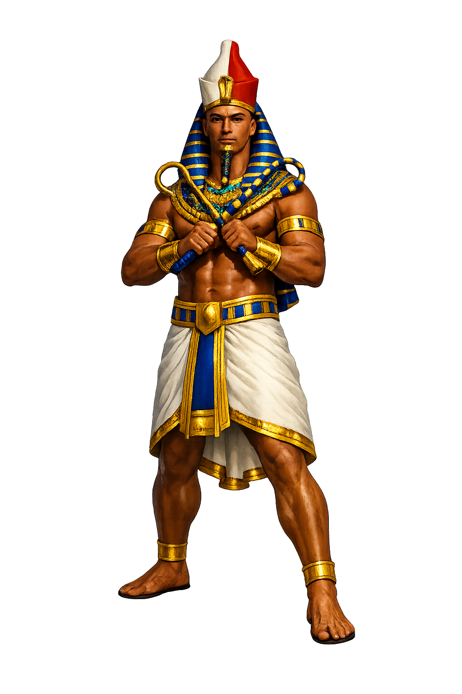

Ancient Domain
In the greek location tradition, Aígyptos governed personified egypt, the black land. The name encodes a sphere of power that shaped ritual, narrative, and social order.
Extended Lore
Etymology · Phonology · Orthography · Cultural Legacy · Primary Sources

Essential information about Aígyptos, Personified Egypt, the Black Land
From original script to Unicode restoration
Aígyptos is Tier 1 because its Unicode restoration preserves the orthographic signature appropriate to the greek-location tradition.
Character-by-character philological analysis
| Character | Unicode | Name | Block | Phonetic Role |
|---|---|---|---|---|
| A | U+0041 | Latin Capital Letter A | Basic Latin | Alpha |
| í | U+00ED | Latin Small Letter I with Acute | Latin-1 Supplement | Acute on iota (diphthong ai) |
| g | U+0067 | Latin Small Letter G | Basic Latin | Gamma |
| y | U+0079 | Latin Small Letter Y | Basic Latin | Upsilon |
| p | U+0070 | Latin Small Letter P | Basic Latin | Pi |
| t | U+0074 | Latin Small Letter T | Basic Latin | Tau |
| o | U+006F | Latin Small Letter O | Basic Latin | Short omicron |
| s | U+0073 | Latin Small Letter S | Basic Latin | Sigma |
The Tier 1 classification reflects which ancient features stress, length, or script are preserved in this restoration.
From ancient cult to modern Unicode
In the greek location tradition, Aígyptos governed personified egypt, the black land. The name encodes a sphere of power that shaped ritual, narrative, and social order.
Greek cult and myth travelled with colonists, traders, and conquerors; Roman adaptation, Hellenistic ruler cult, and later European classicism all recast this name for new audiences.
The name endures in place names, scholarly vocabulary, modern fiction, and the ongoing recovery of ancient Greek culture through archaeology and philology. Restoring Aígyptos in Unicode preserves the name's cultural specificity against the flattening force of plain ASCII. Beyond scholarship, Aígyptos remains a byword for antiquity and enigma, from Renaissance Egyptomania to modern museums crowded with mummies and papyri. The Unicode form invites viewers to see the name not as a modern country label but as a Greek act of wonder before the Nile.
Restoring Aígyptos in a domain name is more than orthographic accuracy. It is a statement that the internet should recognize the full range of human writing — not only the ASCII keyboard.
Common questions about Aígyptos, Personified Egypt, the Black Land, and Unicode restoration
In reconstructed pronunciation, Aígyptos is /aigyptos/ — approximately 'aigyptos' — the conventional spoken form..
Aígyptos means From Egyptian Ḥwt-kꜣ-ptḥ ("House of the Ka of Ptah") in the greek-location tradition.
Aígyptos is associated with Sacred emblem (Iconographic marker associated with Aígyptos), Cult site (Sanctuary or holy place where Aígyptos was honoured), Ritual object (Material focus of devotion for Aígyptos), Divine weapon or tool (Attribute marking Aígyptos's power).
Plain ASCII aigyptos strips the stress, length, and script that make the name specific. Unicode restoration returns the name to its original written dignity.
In the Greek genealogical tradition preserved by Hesiod and later mythographers, Aígyptos is named after Aígyptos the son of Bēlos and the brother of Danaos. Their fifty sons and fifty daughters—the Aigyptioi and Danaïdes—were betrothed in a mass wedding that ended in blood. On their wedding night, the Danaïdes, led by Hypermnēstrā, slew all but one of the Aigyptioi, and their punishments became a fixture of the underworld. This myth turns Egypt into a land born from a fratricidal exodus, linking the Black Land forever to stories of exile, vengeance, and dynastic strife.
The philological foundations of this restoration
Every claim on this page is grounded in established scholarship. The orthographic restorations follow disciplinary convention. The etymological chain follows the best available reference works. This is not invention — it is resurrection through scholarship.
You have traced the name from its earliest attestation to its Unicode restoration. Now return to the myth. The story is where the name lives.
Back to Lore